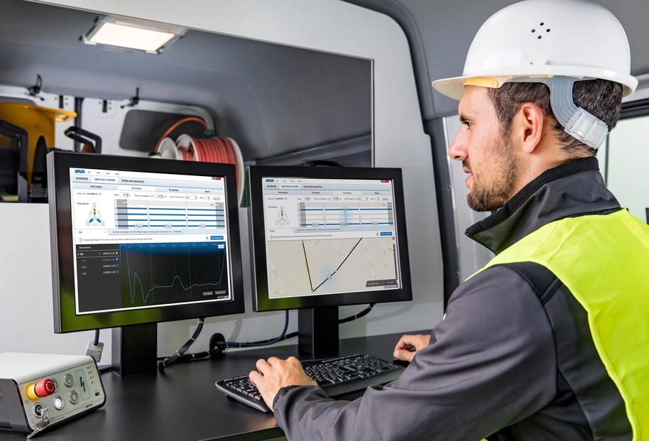

From field research to a new product direction
BAUR · High-Voltage Diagnostic Systems · 2019–2020

Expanding beyond the expert lab user
BAUR builds precision instruments for high-voltage cable testing, equipment used to diagnose, test, and locate faults in underground power cables. Their existing software was designed for expert users operating in controlled lab environments: experienced electrical engineers with deep domain knowledge and dedicated test workstations.
The question BAUR brought to the project was strategic: could they extend their software to reach a different user, the field service technician who tests cables at the roadside, in vehicle cabs, or at distribution substations? And if so, what would that actually require?
There was no existing evidence base for this question. BAUR knew their lab users well. They had almost no knowledge of what field service cable testing actually looked like in practice, what the environment was, what tools the technicians used alongside the software, what the physical constraints were.
Contextual inquiry in the field
The research approach was contextual inquiry, observation and interview in the environment where the work actually happens, not in a usability lab or meeting room. This meant going to cable test sites: road maintenance operations, substation access points, and field service vehicle deployments.
The choice of contextual inquiry was deliberate. The constraints that matter in field service work, physical, environmental, procedural, are invisible in retrospective interviews and underdocumented in requirements. You only find them by being there.
Sessions were structured around a combination of observation (watching the technician move through a test procedure from vehicle arrival to results logging) and contextual interview (asking about the procedure, the equipment, the decision points, and the workarounds).
Field conditions invisible in the lab
The synthesis from field research produced a set of operating constraints that directly challenged the assumptions underlying the existing software design:
How findings influenced the roadmap
The field research output was presented to the BAUR product team as a structured synthesis: operating environment constraints mapped to specific software failure modes, with clear implications for what an extended field-service product would require, and what it would cost to retrofit the existing product versus design for field use from the ground up.
The findings contributed directly to a strategic roadmap discussion about the feasibility and design requirements for extending the product to mobile and in-vehicle form factors. The research reframed the question from "can we port the existing software to a tablet?" (the initial framing) to "what does field-service software actually need to be, and is that a different product?"

Reconstructed for this portfolio from the original project methodology; confidential product details removed.
This kind of reframing, from an implementation question to a product strategy question, is what field research does when it's used well. The value is not the usability findings (though those exist); it's the change to the team's mental model of what they're building and who they're building it for.
Working in a high-stakes technical domain
High-voltage cable testing is a safety-critical domain: errors in test procedure or results logging can have serious consequences for infrastructure operators and the technicians themselves. Designing for this domain required enough domain literacy to understand the procedural logic, why certain sequences are fixed, what the consequences of an interrupted test are, what the regulatory documentation requirements look like.
Part of the research preparation was building that domain fluency before going into the field, working through IEC 60060 test standards, BAUR product documentation, and pre-session interviews with internal application engineers. This allowed the contextual inquiry sessions to focus on the user's actual decision-making and workarounds, rather than spending field time on basic domain orientation.
The same domain-first approach has shaped every industrial and medtech project I've worked on. You can't do useful research in a domain you don't understand well enough to ask the right questions.
Reflections
The most important thing about this project was not the usability findings, it was the shift in the product team's understanding of what problem they were actually trying to solve. Before the field research, the framing was an engineering problem: how to port existing software to a new form factor. After the research, the framing was a product strategy problem: is a field-service product a meaningfully different product, and if so, what would it take to build it properly? That reframing changed the scope, timeline, and investment logic of the roadmap discussion in ways that a usability audit of the existing software never could have.
The BAUR project also reinforced a view I hold about research methodology: the right method is the one that reaches the constraints that matter. Lab-based usability testing would have found interaction design issues in the existing software. It would never have found gloved use, road-closure time pressure, or in-vehicle ergonomics, because those constraints only exist in the environment where the work actually happens. Method choice is a strategic research decision, not just a logistics one.